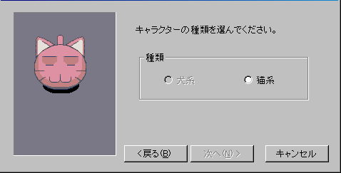

| 概要 | 情報 | アイテム一覧 |
| 敵キャラ一覧 | ステージ一覧 | 夢幻迷宮について |
| 攻略チャート | Zwei!! 攻略へ |
| 1 | 2 | 3 | 4 |
Zwei!!に関する妙な情報を載せています
| 軌道・・・ 赤い四角で囲んだ範囲で敵を上に吹き飛ばすと、完全に上昇せずに 丸太の部分で止まります。 ゲームをプレイしていると分かるとおり、これは上に吹き飛ばして いるのではなく、前方に・・・ |
| あの2匹も 正式なボスではない「たいたん」と「こぼるたんX」の2匹は うまくやれば上に吹き飛ばすことができます。 まぁ、一度くらい成功しても微々たるダメージしか与えられ ませんがね。 |
| ナイトロードとの合い方 スピリの古代迷宮にある、「電卓」、「時計」、「カレンダー」を回収する ことで、スペシャルへ続く部屋の壁に穴が開きます。 その奥にはセーブポイントがあり、さらに奥にはナイトロードが待っていま す。 このボスとの戦いには制限時間があるので、素早く倒しましょう。まぁ、ス ペシャルに入るだけの財力を持っている頃のレベルでは、ザコかもしれませ んが。 |
| ゲーム未使用画像 いかがわしい方法で入手したゲーム未使用画像(ウィンドウ)を紹介。 ペットの基本画像のようです ペットの登録画面です。開発初期では井戸のイベントがないのでしょうか。   猫なのに犬の画像選択とは・・・ モナがいませんね 名前は手入力のようです 「ゲームの世界」とは・・・。Xanadoっぽい。 |
| マップ的芸術 クロップLv.28、ケノーピLv.29、パーヴェルLv.31、カヤパLv.33の 第2フロアは、それぞれ「地」、「火」、「水」、「風」の形になっ ています。 |
| 浮くアイテム 魔王戦で、ごく希にておすが空中に召還されます。それを倒すと、 アイテムが中に浮いてしまいます。当然、拾うことはできません。 |
| 1 | 2 | 3 | 4 |
| 概要 | 情報 | アイテム一覧 |
| 敵キャラ一覧 | ステージ一覧 | 夢幻迷宮について |
| 攻略チャート | Zwei!! 攻略へ |
Zwei!!
| 目次へ戻る | ページの上部へ |